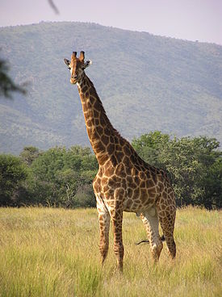

Описание жирафа
Жираф – это самое высокое животное в мире. Высота (рост) жирафа достигает 5,5 – 6,1 метра, треть из которой приходится на его знаменитую шею. Вес жирафа самца может колебаться от 500 кг до 1900 кг, а сердце весит целых 12 кг: за минуту через его клапаны проходит около 60 литров крови, а давление внутри сосудов превышает стандартное давление среднестатистического человека в 3 раза. Благодаря высокой плотности крови даже резкая смена положения головы жирафа не приводит к ухудшению состояния животного. Несмотря на внушительную длину, шея жирафа полностью отвечает стандартным характеристикам млекопитающего – у жирафа 7 шейных позвонков, каждый из которых достигает в длину 25 см. Главная шейная вена имеет в своей конструкции специальные запирающие клапаны, отвечающие за равномерную подачу крови с одинаковым давлением.
Вернуться на главную страницу